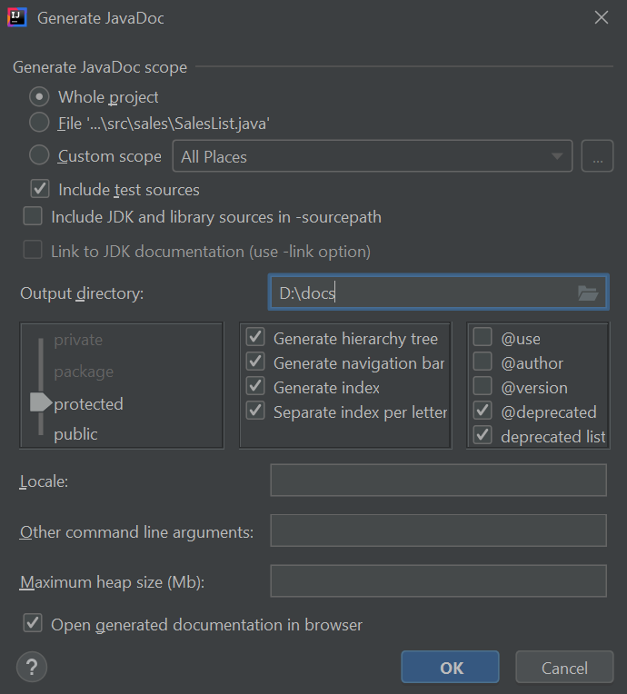

<section data-markdown>
<script type="text/template">
## Documentation with IntelliJ
</script>
</section>

<section data-markdown>
<script type="text/template">
## Generating documentation

Menu *Tools* > *Generate Javadoc*

<div align="center">
    
</div>

</script>
</section>

<section data-markdown>
<script type="text/template">
## Exercise

Generate the documentation for Exercise 1 and 2 of [previous document](https://nachoiborraies.github.io/java2/09a.html)

</script>
</section>
    
